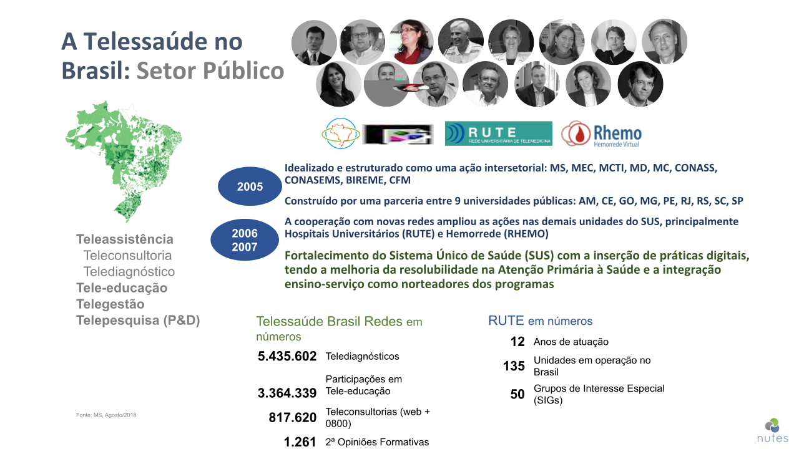

Inovações Tecnológicas em Saúde
Prof. Fernando Sales
@fjrsales

Sobre os próximos minutos
- Temática(s) relevante(s)
-
Estamos investindo TEMPO
- Recurso (+ valioso?)
- Alcalose Pós-Prandial...
- Será uma fala não convencional...
-
Mais PERGUNTAS do que RESPOSTAS!
-
Diferentes PERSONAS
- Reflexões e novas HIPÓTESES!
-
Diferentes PERSONAS
- Toda oportunidade tem um desafio!
"Pactos claros, amizades eternas!"
Profa. Magdala Novaes, UFPE Coordenadora - NUTES-HC
Toda história tem um começo...
Um pouco da minha história...
Onde está acontecendo isso?
A Transfomação Digital está aí...


Qual é a magnitude do impacto?

Sobre o FUTURO do trabalho...
Future of Work Report
Forum Econômico Mundial - 2016
McKinsey Quarterly
Where machines could replace humans—and where they can’t (yet). Jun 2016
Sobre o FUTURO do trabalho...
Future of Work Report
Forum Econômico Mundial - 2016
Sobre o FUTURO do trabalho...
Future of Work Report
Forum Econômico Mundial - 2016
Sobre o FUTURO do trabalho...

https://www.mckinsey.com/featured-insights/future-of-work/jobs-lost-jobs-gained-what-the-future-of-work-will-mean-for-jobs-skills-and-wages


#TECH: Destrói mas CRIA novos...
Sobre o #FUTURO:
Novas necessidades,
novas oportunidades!
Title Text
Subtitle
"O ANALFABETO do século XXI não será aquele que não consegue LER e ESCREVER, mas aquele que não consegue APRENDER, DESAPRENDER, e REAPRENDER." Alvin Toffler
INOVAÇÃO
O QUE?
COMO?
POR QUE?
O conto dos seis sábios cegos
O conto dos seis sábios cegos
O conto dos seis sábios cegos
O conto dos seis sábios cegos
O conto dos seis sábios cegos
O conto dos seis sábios cegos
O conto dos seis sábios cegos
Qual deles estava certo?
Inovação em Saúde
Tecnológica x Valor
Outras competências importantes:
Design, Comportamento...
Saúde Digital
Tecnológica x Valor ?

É o #TECH, certo?
O que está errado???
GE.N.TE
Saúde Digital
Por quê está "tão" em foco?
Saúde Digital
As fronteiras mudaram...

Dados...[Facebook?]...Médicos!
Os tempos mudam...
Os Assistentes Pessoais...
Os Assistentes Pessoais...

Os Assistentes Pessoais...


Transformação Digital da Saúde
Tendências? Apostas? Perspectivas?
No Brasil...
Parâmetros: Últimos 90 dias a partir de 25/04/2019
Buscas sobre telemedicina...
Telemedicina: Esse tema é "antigo" ...

Telessaúde, é o mais adequado...
-
Multiprofissional
- Medicina, Enfermagem, Psicologia...
-
Quanto à forma de execução
- Síncrono [Tempo Real], Assíncrono...
- Telediagnóstico
- Tele-Educação
- Telerregulação
- Telemonitoramento
-
Teleconsulta
- Mais "polêmico"
Hot Topics
Mais promissores?

senac2019/24538c6631dcff6bc18d9c5d8d4ac9ee.png
AI, Machine Learning, Deep Learning

AI, Machine Learning, Deep Learning
https://arxiv.org/pdf/1707.01836
AI, Machine Learning, Deep Learning
https://research.google.com/pubs/archive/45732.pdf

AI, Machine Learning, Deep Learning
Será?
Anyone can...

m-Health, Wearables, Big Data...

Wearables, Big Data - Escala Global..
Genomica, Proteomica... Biotech
Genomica, Proteomica... Biotech

Hot Topics
Tem muito mais!
Para não esquecermos...
-
Precision Medicine
- 23andMe.com
- Blockchain [Bitcoin]
- Drones
- Realidade Virtual e Aumentada
- Wearables, IoT [IoMT]
- Proteção de Dados - Questões Éticas
-
Bots
- Chatbots, Personal Assistants...
Pra finalizar...
-
Presente e Futuro
- Aprender, Desaprender, Reaprender
-
Novas Metodologias [Conteúdos]
- Educação em Saúde Digital
- Nova Saúde, Novo Paciente, Novo Mercado
-
Formação em saúde não é só técnica
- Gerencial, Tecnológica, User Centered
Pra finalizar...
-
#EraDosRobôs: o DIFERENCIAL é SER HUMANO!
- Desafios: Comportamento e Comunicação
-
Ganho de Produtividade
- "Vai sobrar tempo" [Será?]
- Oportunidade: Valor para o paciente!
-
Sinergia com outras tecnologias
- Chatbots, Assistentes Pessoais, Blockchain, Telessaúde, Wearables, AR/VR...
- Nova Saúde, Novo Paciente, Novo Mercado!
-
Mudança de Modelos - Healthcare Delivery
- Fee for Service x Bundled x Value Based
Sobre o FUTURO...
Muito Obrigado!